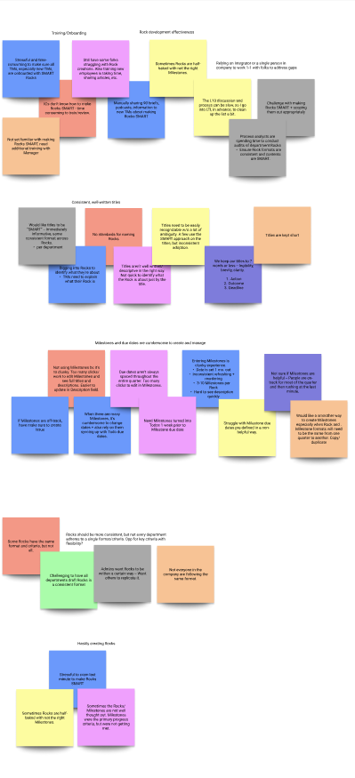

Featured Work
Designing AI-Powered Marketing Guidance at Constant Contact
How I’m shaping AI-powered workflows across reporting, customer success, campaign guidance, and activation — helping small business marketers act on insights with confidence.

Turning the Help Panel into a Retention Engine
How I used behavioral data and journey mapping to expose a churn problem hiding in plain sight — and designed a graduated retention experience, from quick fixes to AI-powered conversational retention.

Terra: Building Ninety’s First Unified Design System
How I co-led a 0-to-1 design system — semantic token architecture, accessible documented components, and the cross-functional alignment that made it the foundation for everything that followed, including AI.

Draft Rocks with Maz AI
How I designed a conversational AI coach inside Ninety’s goal-setting flow — replacing blank forms with EOS-style coaching questions that auto-fill SMART quarterly goals and milestones.

Ninety Mobile: From Zero to Apple’s Top 100
How I drove the discovery, vision, and design of Ninety’s first mobile app — trading feature parity for user value, hitting 3× expected adoption and a Top 100 Business Apps ranking.